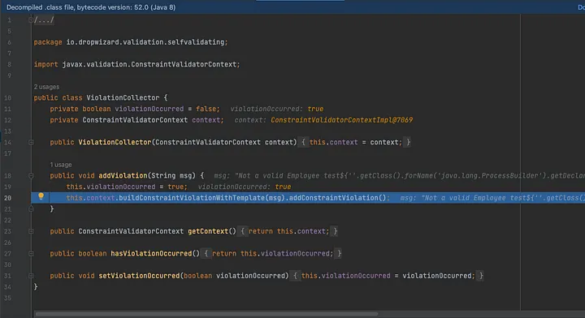

In this blog post we will talk about a Java Specific bug that are often overlooked during pentest , which can give us a code execution if certain Conditions are met.
The Bean in java simply refers to the POJO classes or we can say , the classes which have member variable declared , which have getters and setter methods. Now when ever we fire any api that api needs to have certain body, and in spring we can set it by passing the Body type as class name.
Now each time we fire the request we often see that , the application validates the data before processing the request, and this is done by @Valid attribute .
As you can see above that we do not want specific variable not to be null or we want specific variable to be between certain numbers, and for these have added annotation such as @NotNull @Min and @Max . These are called Validators and depending on the application requirement we can also introduce our custom validators.


If you pay attention to the above code you can see that the Message that gets displayed is partially Controlled by the attacker. What ever the String passed to the data variable is gets added to the message . The message is then sent to buildConstraintViolationWithTemplate() which raises an error and displays the message to the user and discards the request. Now we can send a Java expression in the data input and can get a code execution From this function.
${''.getClass().forName('java.lang.ProcessBuilder').getDeclaredConstructors()[0].newInstance(['touch','/tmp/gg']).start()}
Note: You may have to change the payload based on the application you are trying to exploit.
One key element to exploit this issue is that there needs to be hibernate Dependency present on the Class path. If you are using maven and spring , check out the pom.xml file to see if you have hibernate-validator version ≤ 6.1.7.Final
Now the question is why this dependency is required. To understand it in more details we used breakpoint and debugged the complete code flow from BuildConstraintViolationWithTemplate() to the actual sink fucntion which evaluates the Expression which is ELTermResolver.interpolate(). But before diving into the root cause lets understand few concepts.
A message interpolator is responsible for transforming the so called message descriptor specified via the message attribute of the constraint into a fully expanded, human-readable error message. This can happen in 2 ways
Value must be between {min} and {max}
Must be greater than ${inclusive == true ? 'or equal to ' : ''}{value}
So any data which has only {} , is going to be interpolated using Parameters and data which has ${} is going to be interpolated using expressions.

As you can see on the above code the InterpolationTerm class which has a parameterised Constructor ,checks if the data sent is an ELExpression or not, and the way it checks is simply by checking if the data starts with $

and if the the data starts with $ then the interpolation resolvers is going to be ELTermResolver class. Checking the ELTermResolver class we see the method interpolate being implemented, which looks like below.

Keeping the SimplELContext() as the Context the ValueExpression.getvalue() is called on the provided expression which then results in our java expression code being executed. The full call stack looks like below.

As you can see on the stack trace , the code flow from the org.springframework.validation.beanvalidation jumps to org.hibernate.validator.engine and from there onwards every call is on the hibernate class files.
Use parameterised message templates instead of String concatenation. When doing so, always use Expression variables which will allow you to pass objects directly to the EL context preventing an attacker from being able to arbitrary modify the message template

DropWizard Remote Code Execution Analysis(CVE-2020–5245 and CVE-2020–11002)
CVE-2020-5245
Lets Take a look into the advisory.
Remote Code Execution (RCE) vulnerability in dropwizard-validation <2.0.3
The advisory says the key culprit was the @SelfValidation and the @SelfValidating annotation.
So lets build our own sample app and implement those and see how code flow occurs from these annotations using debugger and see how can we exploit it.
We can find the Sample project used at
https://github.com/w3bspl01t3r/VulnerableApps1DayAnalysis
If you are not familiar with DropWizard then before moving forward its good to get familiar, as we will not be discussing on how to create and run the project.
So we have 2 classes
The pojo class is a self validating class and have a selfValidation method called Validate.
The validate method checks if the name is not equals it raises a violation with user value getting concatenated to the Message.
Setting up the debugger and firing the /test endpoint we see the code first stops at col.addViolation as we have added the breakpoints there.

And then the code flows to violationCollector.addViolation().

As you can see in the above code the code indeed flows to the
this.context.buildConstraintViolationWithTemplate(msg).addConstraintViolation();
which is our target sink function, thus if we provide the correct EL Expression , that expression will get evaluated and we will have a Remote Code Execution.
We used the payload mentioned above and we can clearly see that we got a call back yo our listener thus confirming the code execution.
Will take a look into CVE-2020-11002 on the next blog.
Thats it for Today.
Thanks For Reading.
Happy Hacking.
You can connect with me at: